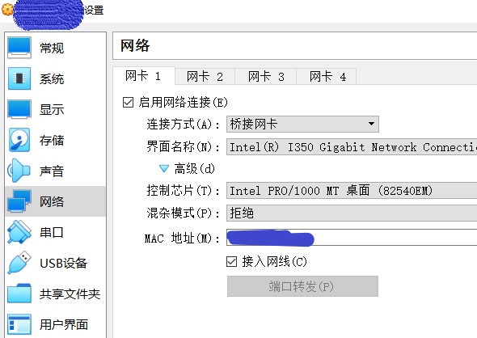
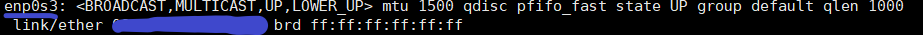
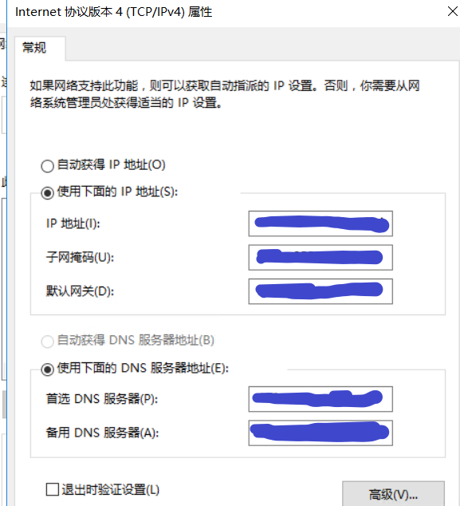

我们在安装虚拟机时，一般有三种网络方式可以选择：
- NAT 模式
- 主机模式
- 桥接模式
为了让我们的虚拟机以类似独立的方式访问网络,我们需要配置为桥接模式。
，这里我是用的是VirtualBox安装的虚拟机,因此通过它来配置:
在设置中将NAT网络改为桥接:
重启虚拟机
通过
ip addr命令获取虚拟机网卡和mac地址1
ip addr

这里,enp0s3是网卡,蓝色覆盖的就是虚拟机的mac地址，这个需要记下来,下面配置需要.修改
/etc/sysconfig/network-scripts/ifcfg-enp0s3，与上面的网卡名称相对应.1
2
3
4
5
6
7
8
9
10
11
12
13
14
15
16
17
18
19
20
21HWADDR=**:**:**:**:**:**
TYPE="Ethernet"
PROXY_METHOD="none"
BROWSER_ONLY="no"
BOOTPROTO="static"
DEFROUTE="yes"
IPV4_FAILURE_FATAL="no"
IPV6INIT="yes"
IPV6_AUTOCONF="yes"
IPV6_DEFROUTE="yes"
IPV6_FAILURE_FATAL="no"
IPV6_ADDR_GEN_MODE="stable-privacy"
NAME="enp0s3"
UUID="****************************"
DEVICE="enp0s3"
ONBOOT="yes"
IPADDR=**.**.**.**
NETMASK=255.255.255.0
GATEWAY=**.**.**.**
DNS1=**.**.**.**
DNS2=**.**.**.**以下是几个需要修改的地方:
HWADDR: mac地址,也就是上面我们通过
ip addr得得到的地址，填入这里即可
BOOTPROTO: 如果需要使用固定ip,那么就是static;如果使用动态ip，那么填dhcp,注意使用dhcp这种方式的话下面的IP地址,子网掩码,网关和DNS这些就不用配了,全部会自动获取.但是如果不支持dhcp方式的话,就需要手动指定,这里我采用的是静态ip
ONBOOT：改为开机启动yes
IPADDR：静态ip地址,自己分配
NETMASK：子网掩码,和宿主机保持一致
GATEWAY: 网关,和宿主机保持一致
DNS1: 域名服务器1，和宿主机保持一致
DNS2: 域名服务器2，和宿主机保持一致以宿主机器windows系统为例,我们可以通过
控制面板-网络和Internet-网络连接-右 键属性-ipv4-属性查看获取到对应的网关等信息:
修改完成后,重启网络服务
1
systemctl restart network
查看ip
1
ip addr
ping一下看看
1
ping www.baidu.com